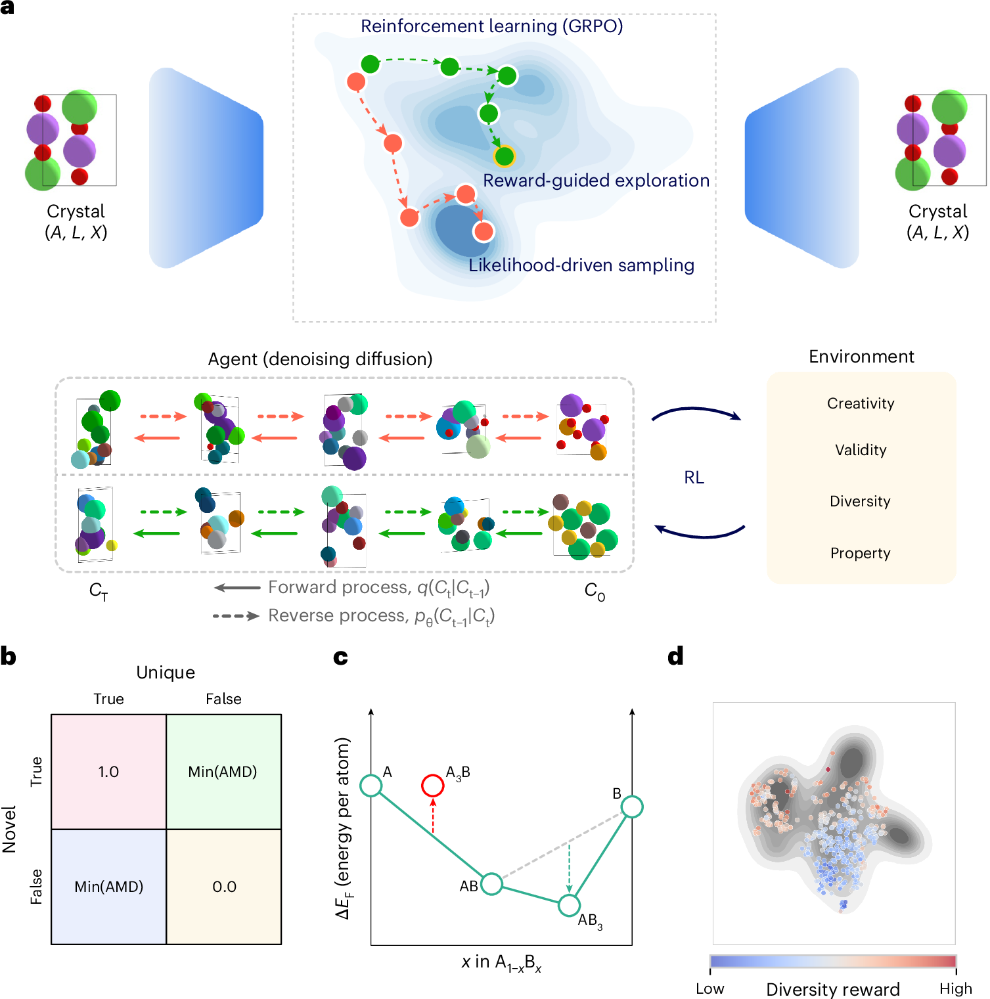
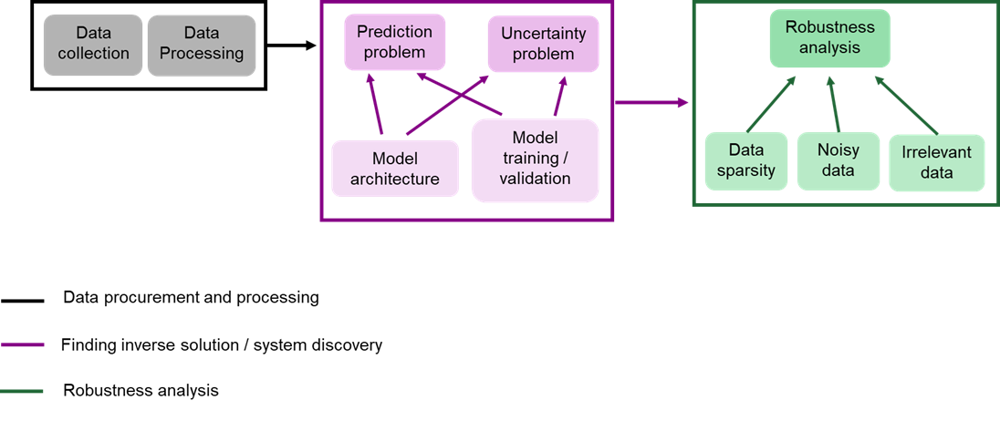

正在阅读 2026-09-25 · 第 3 批 归档。返回最新一期
每日论文推荐
检索本期论文
开启 JavaScript 后可使用筛选与排序。论文与目录可直接阅读。
本期推荐正在准备 可先浏览历史归档，或查看来源状态。
没有符合条件的论文 试试其他关键词，或减少筛选条件。
清除筛选
Crossref 2026-07-06 CNS 子刊 结构生成式设计与可靠性优化
Guiding generative models to uncover diverse and novel crystals via reinforcement learning
Hyunsoo Park, Aron Walsh Nature Machine Intelligence
全文精读已完成
本文针对似然驱动生成与新材料发现目标错位，提出Chemeleon2，将潜空间扩散、组相对策略优化与多目标奖励结合，兼顾晶体新颖性、稳定性和多样性。[P1–P3]在Alex-MP-20上，亚稳、唯一且新颖的联合比例由15.9%升至61.3%，但唯一性下降；带隙定向生成也获得改善。[P4][P7]值得关注的是奖励设计与探索约束，而非将计算稳定性直接等同于可合成性或工程可靠性。[P6][P11]

查看大图
Fig. 1 · 强化学习引导晶体结构探索
图解：原文 Fig. 1 展示潜空间扩散模型与组相对策略优化（GRPO）的连接：通过新颖性、稳定性与多样性等奖励引导晶体候选探索。下方给出不同奖励的定义和分布示意，用于理解生成目标如何与材料发现目标对齐。
Park, Hyunsoo et al.原文图页 · CC BY 4.0
依据论文全文整理。解读与建议不代表作者结论。 论文依据 1
中文导读
本文针对似然驱动生成与新材料发现目标错位，提出Chemeleon2，将潜空间扩散、组相对策略优化与多目标奖励结合，兼顾晶体新颖性、稳定性和多样性。[P1–P3]在Alex-MP-20上，亚稳、唯一且新颖的联合比例由15.9%升至61.3%，但唯一性下降；带隙定向生成也获得改善。[P4][P7]值得关注的是奖励设计与探索约束，而非将计算稳定性直接等同于可合成性或工程可靠性。[P6][P11]
阅读建议 推荐作为生成式材料设计的方法论文重点阅读，尤其关注GRPO、边际贡献奖励及多样性消融；对智能运维和可靠性研究仅具间接迁移价值，不能视作直接应用证据。[P3][P6][P11]
研究问题 作者指出，最大化训练数据似然倾向于复现已知材料分布，而材料发现希望进入兼具新颖性与热力学可行性的欠探索区域。原子种类、晶格和坐标又构成耦合的离散—连续空间，使直接策略优化成本较高。核心问题因此是如何改变探索目标，同时维持物理合理性。[P1][P2]
方法与路线 方法先用VAE统一编码晶体，再把潜空间反向扩散作为策略，以GRPO进行同条件候选的组内优势归一化，冻结解码器。奖励结合AMD创造性、MLFF凸包能量及成分和结构多样性；后者用核分布差异和留一法贡献分配样本奖励，并辅以KL约束与熵奖励。[P9–P11]
创新与比较 解读：贡献主要是把适合策略梯度的连续潜表示、无需独立价值网络的GRPO和材料领域奖励整合，而非提出全新的强化学习算法。多样性奖励同时约束批内冗余和参考分布偏离，区别于单纯鼓励远离已知样本；模块化设计还支持加入性质目标。[P2][P8][P11]
证据与发现 每模型生成10,000个未经弛豫的结构：Alex-MP-20上mSUN由15.9%升至61.3%，唯一性却由99.4%降至88.7%。性质生成的512个样本中，82个同时满足mSUN与2.7—3.3 eV带隙区间。结果支持本设置下的综合收益，而非所有指标均改善。[P3][P4][P7]
局限与边界 作者承认0 K凸包代理未涵盖温度与动力学，模型不能区分有序相和无序固溶体；高元体系可能因竞争相缺失而被高估稳定性。解读：复现还需核对奖励权重遗漏、MMD指标重复及图文数值不一致，不能用潜空间覆盖得分替代真实结构新颖性。[P6][P7][P10][P11]
方向关联 解读：本文直接契合生成式材料逆向设计，可为结构设计提供先学习生成先验、再用可验证目标优化的思路。对智能运维和可靠性，仅能借鉴多目标权衡及候选去冗余机制；论文没有设备退化、寿命或失效概率验证，晶体热力学稳定性不能直接充当工程安全指标。[P2][P8][P11]
后续研究建议 建议：先核实公开版本的奖励权重、能量归一化及核函数求和实现，再设置多随机种子和奖励消融，分开报告重复率、原型新颖性及DFT复核结果。对复杂组成加入元素数量约束，并检查竞争无序相；迁移工程设计时另设失效约束，不沿用晶体稳定性标签。[P6][P10–P12] 原文依据：P1、P2、P9、P10、P11、P8、P3、P4、P7、P6、P12
结构生成式设计与可靠性优化
Google Scholar 2026 结构疲劳与可靠性
Prediction of residual life and critical crack length using the forward/inverse machine learning based on the configurational force fatigue model
Y Dong, R Liu, Q Li Y Dong, R Liu, Q Li - International Journal of Fatigue, 2026 - Elsevier
全文精读已完成 · 原文有缺项
资料核对说明 P3 · 原页公式(5)、(6)位置分别显示“3. \* MERGEFORMAT(5)”和“4. \* MERGEFORMAT(6)”，实际公式缺失。分别影响等效构形力幅ΔCeq的计算关系及该处疲劳模型完整表达的核验。P2的增长率关系及P3公式(7)仍可独立识读，但不能据此补造缺失公式。 P13 · 已从原页核实图16左下拟合标注为da/dN = −9.8611(1 − e^(0.25844a))，正文却写为da/dN = −9.8611(1 − e^(−0.25844a))，并称其为饱和指数增长。指数符号在图文之间不一致；正文所写式对正a给出负增长率，而图式不呈所述饱和趋势，且所列系数与图示增长率量级存在疑点。原页没有说明应更正哪一项，不补造系数或公式。该缺陷影响增长率—裂纹长度拟合及稳定高速阶段的解释，不妨碍其余内容识读。 本文面向延性金属混合型疲劳裂纹，将构形力疲劳关系嵌入物理信息神经网络，正向预测剩余寿命，再以零剩余寿命为目标，通过遗传算法反演临界裂纹长度[P4–P5]。铝合金与45钢数据支持其预测潜力，混合型测试集报告R²为0.9623[P11]。解读：值得借鉴的是寿命与失效阈值联合评估框架，但原文件公式缺失、拟合图文矛盾及测试集参与调参，限制了复现与可靠性论证[P3、P8、P13]。
原图待获取 · 查看原文
依据论文全文整理。解读与建议不代表作者结论。 论文依据 1
中文导读
本文面向延性金属混合型疲劳裂纹，将构形力疲劳关系嵌入物理信息神经网络，正向预测剩余寿命，再以零剩余寿命为目标，通过遗传算法反演临界裂纹长度[P4–P5]。铝合金与45钢数据支持其预测潜力，混合型测试集报告R²为0.9623[P11]。解读：值得借鉴的是寿命与失效阈值联合评估框架，但原文件公式缺失、拟合图文矛盾及测试集参与调参，限制了复现与可靠性论证[P3、P8、P13]。
阅读建议 建议重点阅读物理损失构造和临界裂纹长度反演流程[P4–P5、P12]，适合作为疲劳可靠性研究的方法参考；不宜未经公式核验与独立验证就用于工程失效阈值决策。
研究问题 混合型裂纹在复杂应力状态下发生偏转，寿命评估需要同时描述增长速率和方向。作者指出经验模型超出标定范围存在“significant predictive scatter”[P2]。研究因此聚焦两个关联问题：当前裂纹还能服役多久，以及达到何种长度对应疲劳失效[P1]。
方法与路线 网络以裂纹长度及构形力分量C1、C2为输入，以剩余寿命为输出；损失由数据均方误差与加权对数物理残差组成，并迭代识别经验参数。推导采用修正因子近似为1及初始裂纹远小于临界长度的假设，随后用遗传算法搜索零剩余寿命对应的长度[P4–P5]。
创新与比较 作者将构形力的能量驱动与方向信息引入寿命学习，并把训练后的正向模型用于临界长度逆向识别[P2、P4]。解读：值得关注的是混合型裂纹物理表征、损失约束和逆向搜索的组合，而非单独使用神经网络或遗传算法；现有资料不足以认定这一组合具有领域首次性。
证据与发现 作者报告I型与混合型测试集R²分别为0.8847、0.9623，RMSE分别为5565、3075 cycles[P8、P11]。混合型多数相对误差低于20%，临界长度预测点位于实验分布范围内[P9、P12]。解读：这些是作者报告的预测表现，并非失效概率或置信区间。
局限与边界 原文件[P3]公式(5)、(6)仅有MERGEFORMAT占位，影响等效构形力幅及疲劳模型完整表达的核验，不能补造。[P13]图16与正文指数符号冲突，影响增长率拟合及饱和解释。此外，测试集参与调参[P8]；解读：独立泛化证据受限，缺失公式及相关推导尚未验证。
原文核对：[P3] 原页公式(5)、(6)位置分别显示“3. \* MERGEFORMAT(5)”和“4. \* MERGEFORMAT(6)”，实际公式缺失。分别影响等效构形力幅ΔCeq的计算关系及该处疲劳模型完整表达的核验。P2的增长率关系及P3公式(7)仍可独立识读，但不能据此补造缺失公式。；[P13] 已从原页核实图16左下拟合标注为da/dN = −9.8611(1 − e^(0.25844a))，正文却写为da/dN = −9.8611(1 − e^(−0.25844a))，并称其为饱和指数增长。指数符号在图文之间不一致；正文所写式对正a给出负增长率，而图式不呈所述饱和趋势，且所列系数与图示增长率量级存在疑点。原页没有说明应更正哪一项，不补造系数或公式。该缺陷影响增长率—裂纹长度拟合及稳定高速阶段的解释，不妨碍其余内容识读。
方向关联 解读：正向寿命预测与逆向裂纹阈值识别，可连接智能运维中的检修安排和结构可靠性中的损伤限值评估[P4、P12]。但铝合金采用最终断裂、45钢采用刚度下降20%的失效定义[P6]，迁移到结构设计时必须统一判据，不能将确定性寿命直接视为可靠度。
后续研究建议 建议先索取数据与实现，核对物理损失推导及统计指标公式[P5、P7、P15]；再按试样划分独立测试集，仅在训练和验证集调参，复核预测表现[P8]。最后针对变幅载荷开展验证与不确定性量化，检验阈值决策是否稳健；作者也明确超出既有条件需要重新标定[P13]。 原文依据：P1、P2、P4、P5、P8、P9、P11、P12、P3、P13、P6、P7、P15
结构疲劳与可靠性
复制引用
Elsevier / Scopus 2026-09-01 大模型 AI 智能运维
Large Language Model-Augmented Semantic Digital Twins for Real-Time Fault Diagnosis and Closed-Loop Control
Erfani Jazi A. Journal of Computing and Information Science in Engineering
摘要解读已完成，全文待补充
本文面向智能制造中数字孪生缺乏情境理解与行为推理的问题，提出融合本体、大语言模型与检索增强生成的神经符号认知数字孪生框架。作者将虚拟机器单元的仿真数据映射为知识图谱，结合规则推理生成可读解释及机器可执行命令。[摘要] 用例报告了故障检测、可解释性与自适应控制方面的改善，但摘要未给出量化指标或对照结果。解读：值得关注其知识组织与诊断决策衔接方式，尚不能据此确认工业现场效果。
原图待获取 · 查看原文
依据公开摘要整理，未核验全文细节。解读与建议不代表作者结论。 论文依据 1
中文导读
本文面向智能制造中数字孪生缺乏情境理解与行为推理的问题，提出融合本体、大语言模型与检索增强生成的神经符号认知数字孪生框架。作者将虚拟机器单元的仿真数据映射为知识图谱，结合规则推理生成可读解释及机器可执行命令。[摘要] 用例报告了故障检测、可解释性与自适应控制方面的改善，但摘要未给出量化指标或对照结果。解读：值得关注其知识组织与诊断决策衔接方式，尚不能据此确认工业现场效果。
阅读建议 建议作为智能运维中知识图谱、规则推理与大语言模型融合的方法型论文重点候选阅读；摘要明确提出诊断解释和机器命令生成，但推荐不等于认可其性能与安全性已获充分验证。[摘要]
研究问题 研究问题是数字孪生如何从物理过程复现走向情境理解和系统行为推理。摘要指出传统数字孪生“lack these cognitive abilities”，从而限制可信、透明和自适应决策。[摘要] 解读：作者关注的不只是识别故障，还包括将运行状态转化为可理解、可用于决策的知识。
方法与路线 方法以本体组织故障、纠正措施及规则知识，使用语义网规则语言（SWRL）表达逻辑，再将虚拟机器单元仿真数据语义映射为知识图谱。摘要称其通过“retrieval-augmented generation (RAG)”连接大语言模型。[摘要] 图谱提供结构化背景，模型负责生成解释和命令。
创新与比较 摘要自述的贡献是神经符号认知数字孪生框架，其核心表述为“unifies ontology-based modeling with large language models”。[摘要] 解读：值得关注的是符号知识与语言生成在同一诊断流程中的整合，而非某个组件单独出现；缺少相关工作比较，不能认定这种组合具有首创性。
证据与发现 摘要报告，展示用例表明规则推理与神经生成结合“enhances fault detection, interpretability, and adaptive control”。[摘要] 这是作者对效果的定性陈述。资料未提供检测准确率、响应时延或解释质量评价，因而只能确认其宣称的改善方向，不能比较改善幅度或统计可靠性。
局限与边界 证据边界在于摘要仅明确描述“Simulation data from a virtual machine cell”，未交代实体设备部署、对照基线、测试规模及安全验证。[摘要] 解读：这些属于当前资料缺失，并不等于全文没有相关实验；标题所指闭环控制是否得到完整验证，也不能仅凭命令生成能力确认。
方向关联 与智能运维最直接的联系是本体覆盖“faults, corrective actions, and rule-based logic”，为故障知识、处置措施及推理规则提供统一表达。[摘要] 解读：这可作为运维知识组织的参考；但摘要未涉及结构优化、寿命预测或失效概率计算，不能将其视为结构设计或定量可靠性研究成果。
后续研究建议 建议后续阅读优先核查“machine-actionable commands”如何被验证、执行并接收状态反馈，以及异常命令能否被约束。[摘要] 建议迁移研究时分别设置规则推理、语言模型和融合方案的对照，并考察错误检索及知识缺失下的表现；这些是研究建议，不是作者已完成的实验。 AI 智能运维
Crossref 2026-06-16 CNS 子刊 结构生成式设计与可靠性优化
End-to-end robust system discovery in electrical dynamical systems using scientific machine learning
Jhelum Chakravorty, Nicolò Ripamonti, Tor Laneryd Communications Engineering
全文精读未完成 · 25/27 页 · 请查看未完成原因
资料核对说明 P7 · Data acquisition and processing原页写“29 field of view”，数值29后没有单位。已核实为原页参数说明缺项，不自行补为29°；不影响其他相机参数识读。 P7 · 图3(a)测点附近部分黑底微小标签仍模糊，不能完整逐字确认。P1、P2—P5大字、图3(b)、正文和式(9)已读清；不补写小标签名称或数值，也不把模糊认定为原文件缺项。 P8 · 图4(a)下方热源预测网络有三个输入节点：上方标X，下方标I(t)，中间节点未标变量名。原图已清楚核实该标签缺项，影响完整输入定义的复现；不自行补为y或其他变量，不影响页面其余内容识读。 P9 · 式(13)、(15)原页均写+D∂²/∂x²，未列y方向扩散项；与所述二维热扩散模型及其负号拉普拉斯形式存在表述不一致。这不是提取错误；无法判定是未说明的简化还是排版错误，影响概率模型物理残差复现，不自行补项或改号。 P11 · 图7(a)、(b)原图均有数值刻度，但未标横、纵轴名称及单位；图注只说明比较训练损失，无法据此确定横轴代表时间、训练轮次还是其他变量，不擅自补写。 P11 · 图8图注称四个坐标点在图8(a)中展示，但所提供原页图8(a)未见明确的(1)—(4)测点编号或定位标记。图8(b)编号与图注坐标可读，仍不能直接从图8(a)核对四点位置；不自行添加标记。 P12 · 图9(c)纵轴仅标“MSE [log]”，未注明对数底数；图例、负刻度均清楚可读，但不足以唯一还原原始MSE数值，不擅自假定自然对数或常用对数。 P12 · 图9(b)空间坐标约为0—4，图9(d)横坐标为0—300，二者均标x[m]、y[m]；本页未说明尺度转换关系。不能据此确认实际几何尺寸，也不能自行把(d)单位改成像素。 P12 · 图9(d)标T_diff，图注仅称“their difference”，未定义T_exact−T_pred还是T_pred−T_exact。差值色条清楚，但正负值不能直接解释为高估或低估。 P21 · 图(a)测点上方部分黑底微小标签仍像素模糊，无法完整逐字确认。大字P1、P2—P5及图(b)已读清；不补写小标签，也不将模糊认定为原文件缺项。 P22 · 图(a)热源网络的中间输入节点未标变量名，上、下节点分别标x和I(t)。缺项已从原图确认，影响完整输入定义复现；不能自行补为y。 P25 · 图(a)、(b)有数值刻度但未标横纵轴名称及单位。无法仅凭本页确定横轴是时间、训练轮次还是其他变量；不自行补写。 P27 · 图(c)纵轴仅标“MSE [log]”，未给对数底数，不能唯一还原原始MSE；负刻度不代表原始MSE为负。 P27 · 图(b)空间刻度约0—4，图(d)横轴刻度0—300，两者均标米，本页未说明尺度转换；图(d)T_diff也未定义相减顺序。不能自行改单位或将差值正负解释为高估、低估。 本文面向电力系统资产管理，研究具有多项式动力学的电气系统发现问题，提出基于物理信息机器学习的端到端逆问题求解方案，并以采样方法应对数据稀疏。摘要报告，在感应电机热建模案例中，相比除一个基线外的其他方法，验证误差降低6%至78%；其概率方案精度不及贝叶斯方法，但计算时间减少86%。研究重点是预测性能与计算成本的权衡，而非生成式设计。以下仅为摘要级解读。[摘要]

查看大图
Fig. 1 · 电气动力系统的端到端发现流程
图解：原文 Fig. 1 将研究流程分为数据采集与处理、模型结构及训练验证、鲁棒性分析。中间同时处理预测与不确定性问题，右侧分析数据稀疏、噪声和无关数据的影响。图片从论文公开 PDF 第 5 页提取，保留原图内容。
Chakravorty, Jhelum et al.原文图页 · CC BY 4.0
依据公开摘要整理，未核验全文细节。解读与建议不代表作者结论。 论文依据 1
中文导读
本文面向电力系统资产管理，研究具有多项式动力学的电气系统发现问题，提出基于物理信息机器学习的端到端逆问题求解方案，并以采样方法应对数据稀疏。摘要报告，在感应电机热建模案例中，相比除一个基线外的其他方法，验证误差降低6%至78%；其概率方案精度不及贝叶斯方法，但计算时间减少86%。研究重点是预测性能与计算成本的权衡，而非生成式设计。以下仅为摘要级解读。[摘要]
阅读建议 建议作为物理信息逆问题求解与智能运维的交叉文献补充阅读；其稀疏数据处理和精度—成本比较值得关注，但与给定生成式设计方向并不直接契合，不宜仅凭主题标签列为核心推荐。[摘要]
研究问题 论文将系统发现置于电力系统资产管理背景，研究对象限定为具有多项式动力学的一类电气系统，目标是求解相关逆问题并增强稀疏数据条件下的预测鲁棒性。原文称其为“electrical dynamical systems with polynomial dynamics”，不能据此扩展至任意动力系统。[摘要]
方法与路线 作者采用物理信息机器学习，提供问题设定与求解方法的理论分析，并介绍确定性及概率方案的模型架构、训练和验证方法，同时提出应对数据稀疏的采样方法。原文使用“Physics-Informed Machine Learning”一词，但摘要未给出网络结构、损失函数或采样规则。[摘要]
创新与比较 解读：摘要呈现的方法特色，是在端到端系统发现方案中结合物理信息学习、确定性与概率建模及稀疏数据采样，而非仅比较单一预测器。作者称其为“end-to-end approach”，但没有充分交代与既有方法的技术差异，尚不能据此确认首创性或各组件的独立贡献。[摘要]
证据与发现 感应电机热建模案例中，该方法相对除一个基线外的其他方法实现验证误差降低6%至78%，原文明确为“all but one baseline”。端到端概率方案的验证误差高于贝叶斯方法，但计算时间减少86%；这些结果支持成本与性能权衡，而非所有指标全面领先。[摘要]
局限与边界 证据局限：摘要仅披露感应电机热建模案例，未给出数据规模、稀疏程度、误差指标定义及重复实验信息，无法判断统计稳定性或跨设备适用性。作者明确研究“一类”多项式动力学系统；这限定了摘要支持的结论范围，但不能据此断言该方法在其他系统上失效。[摘要]
方向关联 解读：系统发现与电力资产管理直接相关，因此对智能运维中的模型辨识具有参考价值；概率方案也可能为可靠性分析提供建模思路，但摘要未证明其不确定性校准能力。给定标签为生成式设计，而摘要未涉及结构生成、设计优化或几何约束，因此与该方向仅有间接的方法联系。[摘要]
后续研究建议 建议：后续阅读全文时，优先核查逆问题中的待辨识变量、物理约束实现、采样策略以及计算时间比较条件，再判断方法能否迁移至目标设备。若用于可靠性或设计研究，可另行检验稀疏观测下的辨识稳定性与概率预测校准；这些是研究建议，不是论文已报告的成果。 结构生成式设计与可靠性优化
Google Scholar 2026 结构疲劳与可靠性
Physics-informed stacking ensemble machine learning for fatigue life prediction of stud connectors in steel-concrete composite structures
B Tan, F Chen, D Wang 等 B Tan, F Chen, D Wang, J Shi, C Zhao - Engineering Structures, 2026 - Elsevier
全文精读已完成
论文汇集305个栓钉试件数据，将线弹性断裂力学寿命作为附加特征，结合四类学习器与堆叠集成预测疲劳寿命，并开展SHAP和全局敏感性分析。[P2][P6]表8报告集成模型测试R²为0.83，但误差基于对数寿命，不能直接理解为循环次数误差。[P11]解读：值得借鉴的是物理特征与集成学习的结合；公式、归因排序和敏感性图存在内部矛盾，不宜直接作为可靠性设计依据。[P6][P15][P17]
原图待获取 · 查看原文
依据论文全文整理。解读与建议不代表作者结论。 论文依据 1
中文导读
论文汇集305个栓钉试件数据，将线弹性断裂力学寿命作为附加特征，结合四类学习器与堆叠集成预测疲劳寿命，并开展SHAP和全局敏感性分析。[P2][P6]表8报告集成模型测试R²为0.83，但误差基于对数寿命，不能直接理解为循环次数误差。[P11]解读：值得借鉴的是物理特征与集成学习的结合；公式、归因排序和敏感性图存在内部矛盾，不宜直接作为可靠性设计依据。[P6][P15][P17]
阅读建议 建议有条件重点阅读：适合借鉴栓钉疲劳预测的物理特征构造和集成流程，但复现时必须核查公式、数据及敏感性实现，不建议直接采用其工程安全结论。[P6][P17][P19]
作者 B Tan, F Chen, D Wang, J Shi, C Zhao
研究问题 作者关注组合结构栓钉在材料、几何和加载条件共同作用下的疲劳寿命预测，指出经验公式适用性及机器学习物理解释不足。[P1][P2]解读：研究目标主要是提高寿命点预测与参数识别能力，并非直接计算失效概率；预测准确与设计安全应分别评价。[P13]
方法与路线 作者收集305个试件，以十项基础变量加对数LEFM寿命为输入，随机按8:2划分数据。[P2][P6]采用RF、SVR、GBR和XGBoost，训练集内调参，并以交叉验证预测构建Lasso元学习器；另用SHAP、Morris和Sobol解释模型。[P4][P8][P16]
创新与比较 解读：可借鉴贡献在于把断裂力学计算寿命转为输入特征，再结合异质学习器集成，而非提出新的裂纹扩展定律。[P6][P8]这种物理信息嵌入属于特征工程，不是物理损失或硬约束；联合归因和敏感性分析拓展了解释视角，但不能据此证明物理一致性。[P17]
证据与发现 表8及结论报告PI-Stacking测试RMSE为0.33、MAE为0.24、MAPE为4.48%、R²为0.83，均对应对数寿命评价。[P11][P19]图22显示PI-XGBoost中Δτ与物理特征重要性分别为20%和14.5%，与正文对应关系相反，须保留这一冲突。[P15]
局限与边界 作者承认试验数据不足。[P19]解读：随机划分尚不足以证明跨来源泛化；表3积分形式与式(6)冲突，图13与表8的MAE不一致。[P5][P6][P11]此外Sobol图出现S1大于ST、输入相关性处理不明，削弱了定量敏感性结论的可信度。[P14][P17]
方向关联 解读：该框架可为智能运维中的寿命筛查、结构设计参数比较提供代理模型，但不能把点预测直接作为维护期限。[P18]作者明确模型未内置安全裕度，规范与学习模型承担不同角色；可靠性研究的衔接应是误差建模和安全校准，而不是把文中生存率直接当结构可靠度。[P13]
后续研究建议 建议先索取数据，核对强度定义、LEFM公式和GUI单位，再按文献来源分组验证，并保持派生输入的物理一致性。[P3][P6][P18][P19]随后重算相关输入条件下的敏感性、补充预测区间；作者提出的无损检测微裂纹信息可作为后续物理特征更新方向，而非已有成果。[P19] 原文依据：P1、P2、P13、P4、P6、P8、P16、P17、P11、P15、P19、P5、P14、P18、P3
结构疲劳与可靠性
复制引用
本期暂无符合条件的新核心推荐，可浏览扩展阅读与历史归档。
Crossref 2026-06-11 CNS 子刊 结构生成式设计与可靠性优化
Coercivity influence of nanostructure in SmCo-1:7 magnets: machine learning of high-throughput micromagnetic data
Yangyiwei Yang, Patrick Kühn, Mozhdeh Fathidoost 等 npj Computational Materials
全文精读已完成 · 原文有缺项
资料核对说明 P5 · 表1的1:5相表头原页写作Sm(Co₁₋ₓCₓ)₅，Cu中的u缺失，与正文Cu替代及图3的Sm(Co₁₋ₓCuₓ)₅标注不一致。保留该原文表头问题，不将其解释为碳掺杂；受影响的是相成分标识，表内参数仍可识读。 P6 · 图4g–h右轴、图例及约1.25×10⁻³的标注均为MSE，但P5末至P6开头的对应正文称MAPE。原页已确认图文指标名称不一致，并非公式缺失或文字提取错误。不能据此把1.25×10⁻³确定解释为MAPE；受影响的是模型误差大小及收敛指标的表述，R²趋于约0.90的趋势仍可识读。 P8 · 对应图7的正文先称固定厚度时增大d、减小L提高H_c，随后在最小厚度情形又称“reducing L and d tends to improve H_c”，并称该效应随厚度增加而增强。原页确有两种方向表述，无公式缺项；影响d对H_c趋势的概括，不能擅自统一为同一方向。 P9 · 图7讨论中，原文将随x_Cu从0增至0.3而畴壁能下降近32%的相写为“2:17-phase”，但本段明确Cu变化发生在1:5相，且前句已将2:17相的约10%降幅对应Fe变化。属于原页相名称错配，无缺失公式；影响Cu降低哪一相畴壁能的解释。 P9 · 图8引入段把φ_Z写成Sm₂Co₁₇（2:17相）的体积分数；与P8公式(5)的φ_Z=w_Z/d及P10图8横轴“Z-Phase Vol. Frac.”不一致。原页可确认该相标识错误，无公式缺项；φ_Z应按已给定义识别为Z相变量，不应据此改称基体相分数。 P9 · 图7图注将变化厚度描述为SmCo₅和Sm₂Co₁₇两相的厚度，但图中实际标注w_S与w_Z，示意图明确w_Z对应Z相。原页图注与图内变量含义不一致，无图像缺项；影响厚度扫描对象的辨认。 P11 · 公式(6)原页将Δσ_dw^(S−M)的右端写为σ_dw^(S−M)−σ_dw^(M)，而不是与其他差值定义平行的单相项σ_dw^(S)。原页无字符缺失，但上标与差值定义语境不一致；影响1:5–2:17畴壁能差值的形式定义。不能据此认定实际代码也采用了错误表达式。 P11 · 图9e与正文的Φ_p重要性次序不完全一致：正文在Δσ_dw^(S−M)之后依次列Δl_dw^(S−M)、ΔM_s^(Z−M)，但图中红柱分别约为0.042、0.060，后者更高。无图像缺项；影响后续特征排序，不改变α及Δσ_dw^(S−M)的重要性结论。 P12 · 讨论第(iii)项把H_c称为“coherence factor”，与本页其余正文将H_c用作矫顽力的含义不一致。该术语误写已在原页核实，无公式缺项；不能据此另行引入一个相干性因子。 P13 · 首段将SmCo₅、Sm₂Co₁₇的计算结果称为M_s和K_u，但对应第二项数值为15.0、19.48 pJ m⁻¹，且上下文明确讨论交换刚度。原页符号与物理量及单位不一致，应标注为疑似将A_e误写为K_u，不能把这些数值解释成各向异性常数。 P13 · 公式(12)原页确实写作R²=Σ(Ŷ_i−Ȳ)²/Σ(Y_i−Ȳ)²，而非通常预测决定系数的1−Σ(Y_i−Ŷ_i)²/Σ(Y_i−Ȳ)²。公式现有内容完整，不是提取丢失“1−”；影响R²指标的定义与复现。仅凭此页不能判断实际评分代码及已报告数值使用哪一公式。 P14 · 公式(13)之后，原页将收敛准则写作“H_c≤1%”，而上下文定义的百分比误差指标为MAPE。矫顽场与百分比阈值的写法不一致，无公式缺项；影响收敛准则复现。可指出疑似指标符号误写，但不能擅自补定作者实际使用的判据。 P14 · 公式(15)下方反向传播说明的行内公式原页写作∂L/∂X=(L/∂Y)(∂Y/∂X)，中间因子分子缺少偏导符号∂。这是原页链式求导表达缺项，不是提取错误；影响梯度公式的形式正确性，不能据此断言训练代码有同样错误。 P15 · 参考文献9与28的作者和题名相同，但9写为“Nat. Commun. 8, 7 Seiten (2022)”，28写为“Nat. Commun. 8, 54 (2017)”。原页确有元数据冲突及异常的“7 Seiten”字段；影响文献定位，不能仅凭本批决定正确年份或条目编号。无正文公式或图像缺项。 P15 · 原页参考文献存在重复书目：3/35、4/34、11/38、15/41分别具有相同题名及期刊卷页年份，部分仅作者缩写或排版不同。影响文献去重和独立证据数量统计，不构成新增研究证据；无页面内容缺失。 P16 · 参考文献55原页在题名“Micromagnetic simulations on the grain shape effect in Nd-Fe-B magnets”之后直接列“120, 033903 (2016)”，缺少期刊名称。已从图片核实，并非提取遗漏；影响书目定位完整性，不影响本批其他内容识读。该项不涉及公式或图号，不推补缺失期刊名。 本文围绕SmCo-1:7磁体的结构—矫顽力关系，将42,300组微磁模拟与正向预测、逆向设计结合，区分形核与畴壁钉扎贡献。[P1–P7]作者发现取向偏差影响突出，1:5相主要提供高各向异性，Z相主要增强钉扎。[P11–P12]三个逆向案例的矫顽力误差均低于5%，但钉扎指标误差超过25%。解读：适合学习物理仿真驱动的结构反演，不宜直接视为真实磁体可靠性的验证。[P7]
依据论文全文整理。解读与建议不代表作者结论。 论文依据 1
中文导读
本文围绕SmCo-1:7磁体的结构—矫顽力关系，将42,300组微磁模拟与正向预测、逆向设计结合，区分形核与畴壁钉扎贡献。[P1–P7]作者发现取向偏差影响突出，1:5相主要提供高各向异性，Z相主要增强钉扎。[P11–P12]三个逆向案例的矫顽力误差均低于5%，但钉扎指标误差超过25%。解读：适合学习物理仿真驱动的结构反演，不宜直接视为真实磁体可靠性的验证。[P7]
阅读建议 推荐作为生成式结构设计的方法型论文重点阅读：其前向代理与逆向双误差约束具有明确借鉴价值，但必须同时关注独立微磁验证、适用条件及原文指标错误。[P7][P13–P14]
作者 Yangyiwei Yang, Patrick Kühn, Mozhdeh Fathidoost, Esmaeil Adabifiroozjaei, Ruiwen Xie, Eren Foya, Dominik Ohmer, Konstantin Skokov, Leopoldo Molina-Luna, Oliver Gutfleisch, Hongbin Zhang, Bai-Xiang Xu
研究问题 研究要回答两个问题：哪些纳米几何和磁性特征决定矫顽力，以及如何根据目标性能反推出结构。[P2]难点是形核与钉扎共同作用，且不同结构可能产生相近性能；作者因此同时考察矫顽场与钉扎贡献，而不是仅寻找单一性能最大值。[P5][P14]
方法与路线 作者筛选得到42,300组输入，开展GPU并行微磁模拟，以受控软磁边界层统一形核条件，再训练前向网络。[P3–P5]逆向网络在固定磁性参数下输出四个几何量，损失同时约束参数误差和前向性能误差，权重λ=0.02。[P6][P14]
创新与比较 解读：本文的方法特色是把高通量微磁、机制指标与目标结构反演整合，而非证明一种全新的网络架构。[P3][P14]作者还用相间磁性差值替代部分单相描述符，使1:5–2:17界面的钉扎作用更清晰；这种特征构造比仅报告预测精度更有物理解释价值。[P11]
证据与发现 作者报告取向偏差为主导因素，1:5相通过高各向异性增强矫顽力，Z相提供钉扎位置但过多会限制矫顽力。[P12]图5三个逆向案例的矫顽力相对误差均低于5%，钉扎指标误差却为28.20%、41.18%、25.87%，两类目标的验证质量明显不同。[P7]
局限与边界 模型采用理想周期几何和平均成分，未覆盖随机缺陷极值。[P12]原文缺项包括表1的Cu漏u，影响相标识[P5]；链式求导漏∂，影响梯度表达[P14]；文献55缺期刊名，影响定位[P16]。另有R²定义异常，实际实现未核验，不补造公式或确认受影响评分。[P13]
原文核对：[P5] 表1的1:5相表头原页写作Sm(Co₁₋ₓCₓ)₅，Cu中的u缺失，与正文Cu替代及图3的Sm(Co₁₋ₓCuₓ)₅标注不一致。保留该原文表头问题，不将其解释为碳掺杂；受影响的是相成分标识，表内参数仍可识读。；[P6] 图4g–h右轴、图例及约1.25×10⁻³的标注均为MSE，但P5末至P6开头的对应正文称MAPE。原页已确认图文指标名称不一致，并非公式缺失或文字提取错误。不能据此把1.25×10⁻³确定解释为MAPE；受影响的是模型误差大小及收敛指标的表述，R²趋于约0.90的趋势仍可识读。；[P8] 对应图7的正文先称固定厚度时增大d、减小L提高H_c，随后在最小厚度情形又称“reducing L and d tends to improve H_c”，并称该效应随厚度增加而增强。原页确有两种方向表述，无公式缺项；影响d对H_c趋势的概括，不能擅自统一为同一方向。；[P9] 图7讨论中，原文将随x_Cu从0增至0.3而畴壁能下降近32%的相写为“2:17-phase”，但本段明确Cu变化发生在1:5相，且前句已将2:17相的约10%降幅对应Fe变化。属于原页相名称错配，无缺失公式；影响Cu降低哪一相畴壁能的解释。；[P9] 图8引入段把φ_Z写成Sm₂Co₁₇（2:17相）的体积分数；与P8公式(5)的φ_Z=w_Z/d及P10图8横轴“Z-Phase Vol. Frac.”不一致。原页可确认该相标识错误，无公式缺项；φ_Z应按已给定义识别为Z相变量，不应据此改称基体相分数。；[P9] 图7图注将变化厚度描述为SmCo₅和Sm₂Co₁₇两相的厚度，但图中实际标注w_S与w_Z，示意图明确w_Z对应Z相。原页图注与图内变量含义不一致，无图像缺项；影响厚度扫描对象的辨认。；[P11] 公式(6)原页将Δσ_dw^(S−M)的右端写为σ_dw^(S−M)−σ_dw^(M)，而不是与其他差值定义平行的单相项σ_dw^(S)。原页无字符缺失，但上标与差值定义语境不一致；影响1:5–2:17畴壁能差值的形式定义。不能据此认定实际代码也采用了错误表达式。；[P11] 图9e与正文的Φ_p重要性次序不完全一致：正文在Δσ_dw^(S−M)之后依次列Δl_dw^(S−M)、ΔM_s^(Z−M)，但图中红柱分别约为0.042、0.060，后者更高。无图像缺项；影响后续特征排序，不改变α及Δσ_dw^(S−M)的重要性结论。；[P12] 讨论第(iii)项把H_c称为“coherence factor”，与本页其余正文将H_c用作矫顽力的含义不一致。该术语误写已在原页核实，无公式缺项；不能据此另行引入一个相干性因子。；[P13] 首段将SmCo₅、Sm₂Co₁₇的计算结果称为M_s和K_u，但对应第二项数值为15.0、19.48 pJ m⁻¹，且上下文明确讨论交换刚度。原页符号与物理量及单位不一致，应标注为疑似将A_e误写为K_u，不能把这些数值解释成各向异性常数。；[P13] 公式(12)原页确实写作R²=Σ(Ŷ_i−Ȳ)²/Σ(Y_i−Ȳ)²，而非通常预测决定系数的1−Σ(Y_i−Ŷ_i)²/Σ(Y_i−Ȳ)²。公式现有内容完整，不是提取丢失“1−”；影响R²指标的定义与复现。仅凭此页不能判断实际评分代码及已报告数值使用哪一公式。；[P14] 公式(13)之后，原页将收敛准则写作“H_c≤1%”，而上下文定义的百分比误差指标为MAPE。矫顽场与百分比阈值的写法不一致，无公式缺项；影响收敛准则复现。可指出疑似指标符号误写，但不能擅自补定作者实际使用的判据。；[P14] 公式(15)下方反向传播说明的行内公式原页写作∂L/∂X=(L/∂Y)(∂Y/∂X)，中间因子分子缺少偏导符号∂。这是原页链式求导表达缺项，不是提取错误；影响梯度公式的形式正确性，不能据此断言训练代码有同样错误。；[P15] 参考文献9与28的作者和题名相同，但9写为“Nat. Commun. 8, 7 Seiten (2022)”，28写为“Nat. Commun. 8, 54 (2017)”。原页确有元数据冲突及异常的“7 Seiten”字段；影响文献定位，不能仅凭本批决定正确年份或条目编号。无正文公式或图像缺项。；[P15] 原页参考文献存在重复书目：3/35、4/34、11/38、15/41分别具有相同题名及期刊卷页年份，部分仅作者缩写或排版不同。影响文献去重和独立证据数量统计，不构成新增研究证据；无页面内容缺失。；[P16] 参考文献55原页在题名“Micromagnetic simulations on the grain shape effect in Nd-Fe-B magnets”之后直接列“120, 033903 (2016)”，缺少期刊名称。已从图片核实，并非提取遗漏；影响书目定位完整性，不影响本批其他内容识读。该项不涉及公式或图号，不推补缺失期刊名。
方向关联 解读：与生成式设计的直接联系是从目标性能生成代表性结构候选，并通过前向模型反馈约束；作者明确它不是唯一物理解。[P14]对结构设计可迁移这种反演思路，对可靠性研究则应进一步关注局部薄弱位置；资料没有智能运维场景的直接验证。[P12]
后续研究建议 建议：先用独立微磁计算检验高矫顽力区和训练范围外候选，并对钉扎指标单独验收。[P6–P7]随后加入几何可实现性约束和独立测试集，避免只以非负输出或选轮次的测试损失证明泛化。[P14]最后沿作者提出的APT与体素路线引入局部成分和缺陷波动。[P12] 原文依据：P2、P5、P14、P3、P4、P6、P11、P7、P12、P13、P16
结构生成式设计与可靠性优化
OpenAlex 2026-09-01 结构疲劳与可靠性
Physics-based fatigue life modelling considering welding residual stress relaxation and machine-learning-assisted residual stress threshold determination for fatigue design life
Wenchun Jiang, Yiting Zhang, Xue-fang Xie 等 International Journal of Fatigue
暂时无法获取资料 · 将自动重试
暂无可用摘要，请查看原文。
摘要
暂无可用摘要，请查看原文。
作者 Wenchun Jiang, Yiting Zhang, Xue-fang Xie, Shengkun Wang, S.T. Tu
结构疲劳与可靠性
Semantic Scholar 2026-09-01 大模型 AI 智能运维
An adaptive industrial large language model for mechanical fault diagnosis under variable operating conditions
Chaojun Xu, Zi-Sheng Wang, Yaqiang Jin 等 Advanced Engineering Informatics
暂时无法获取资料 · 将自动重试
暂无可用摘要，请查看原文。
摘要
暂无可用摘要，请查看原文。
作者 Chaojun Xu, Zi-Sheng Wang, Yaqiang Jin, W. Nong
AI 智能运维
Elsevier / Scopus 2026-08-19 CNS 子刊 结构生成式设计与可靠性优化
Fusing generative AI and ML-FFs for inverse design and high-fidelity dynamic simulation of fused-ring aromatic hydrocarbons
Long Z. Cell Reports Physical Science
暂时无法获取资料 · 将自动重试
暂无可用摘要，请查看原文。
摘要
暂无可用摘要，请查看原文。
结构生成式设计与可靠性优化
Crossref 2026-09 结构疲劳与可靠性
Revealing and predicting fatigue crack nucleation in textured zircaloy-4 via full-field experiments and physics-informed machine learning
Weifeng Wan, Xiuqi Xu, Yu Cheng 等 International Journal of Fatigue
暂时无法获取资料 · 将自动重试
暂无可用摘要，请查看原文。
摘要
暂无可用摘要，请查看原文。
作者 Weifeng Wan, Xiuqi Xu, Yu Cheng, Haoyun Zhang, Xiaojun Yan
结构疲劳与可靠性
本期暂无扩展阅读。
微信公众号 · 科研线索 8 条 按已订阅的公众号筛选。标注“公开检索入口”的条目提供标题、来源和检索片段，点击标题可继续查找原文；文章内容及结论尚待核验。
文章跳转若要求验证码，请在浏览器中手动完成。这些线索不占用核心与扩展论文名额。
CJA · ICAS 2026 悉尼亮相
航空学报CJA · 2026-09-22 · 公开检索入口
2026年9月13日,航空学报杂志社一行,再次走出国门,深度参与... 两刊简介航空学报CJA_小编微 信 号:HKXBCJA_xiaobian扫码添...
公开检索入口 《航空学报》2026年第16期目录
航空学报CJA · 2026-09-14 · 公开检索入口
《航空学报》2026年 47卷 16期目录查看整期论文方式1 识别左侧二维码2 点击以下标题2026年第47卷第16期电子期刊.pdf流体力学与...
公开检索入口
来源与采集状态 10 / 11 类正常
2026-09-25 21:03 更新。常规检索：2026-08-26 至 2026-09-25。
数据采集11 项 已实现来源及本轮采集状态；公开接口无需登录即可运行。
ResearchGate 公开索引已接入：Google Scholar / SerpApi 本轮返回 59 条 ResearchGate 元数据。 按发表年份检索；摘要为检索片段，未注明年份的记录保留为待核验线索。 当前使用公开索引，本地浏览器采集尚未产出本期记录。
本轮正常
本期 0 篇
微信公众号 复用本轮独立公众号采集结果；覆盖范围见科研线索与 AI 前沿的来源状态。
arXiv 通过 arXiv 官方 RSS 获取；检索 API 本轮受限。 本轮获取 612 条元数据。
本轮正常
本期 0 篇
出版平台14 项 依据论文的期刊与原文链接归类，可筛选本期已有记录。
SIAM 按期刊名称或原文链接筛选已有记录；未独立抓取此平台。
期刊平台筛选
本期 0 篇